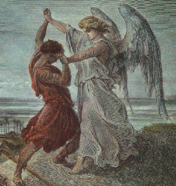

Patience runs out on the junkie
The dark side hires another soul
Did he steal his fate or earn it
Was he force-fed, did he learn it
Whatever happened to his precious self control
Like him I'm tired of trying to heal
This tom-cat heart with which I'm blessed
Is destruction loving's twin
Must I choose to lose or win
Maybe when my turn comes I will have guessed
These are the horns of the dilemma
What truth is proof against all lies
When sacred fails before profane
The wisest man is deemed insane
Even the purest of romantics compromise
What fixation feeds this fever
As the full moon pales and climbs
Am I living truth or rank deceiver
Am I the victim or the crime
Am I the victim or the crime
Am I the victim or the crime
Or the crime
And so I wrestle with the angel
To see who'll reap the seeds I sow
Am I the driver or the driven
Will I be damned to be forgiven
Is there anybody here but me who needs to know
What it is to face this fever
As the full moon pales and climbs
Am I living truth or rank deceiver
Am I the victim or the crime
Am I the victim or the crime
Am I the victim or the crime
Or the crime
Songbook availability:
First performance: June 17, 1988, at Metropolitan Sports Center, Bloomington, Minnesota. "Victim" appeared as the last song in the first set, following "Althea". It remained in the repertoire steadily thereafter.
Graham is a 25-year friend of Weir. He is an actor who plays Roger Bender on the TV show "Now and Again." According to the article, "Victim or the Crime" was written in the early 1980s, and Weir's musical inspiration for the song was a piece by Bela Bartok.
Graham is still writing with Weir, and has several songs in the current Ratdog repertoire.
Can anybody help verify or debunk this?
See Gerrit Graham's essay for the final word on this!
"One of the two horns of my dilemma." (Book IV, chapter 26)
More on this in Gerrit Graham's essay.

Image is Gustav Dore's "Jacob Wrestling With the Angel" (1855) from Carol Gerten-Jackon's Fine Art site.A reference to Genesis 32: 24-32, in which Jacob wrestles with a supernatural being, often rendered as "angel," who is trying to prevent him from crossing a stream. Jacob's thigh is put out of joint in the melee, but eventually he prevails, and insists on receiving the being's blessing. The being blesses Jacob (under duress) and names him Israel.
Worth noting is that this story follows immediately the story of Jacob and his brother
Esau.